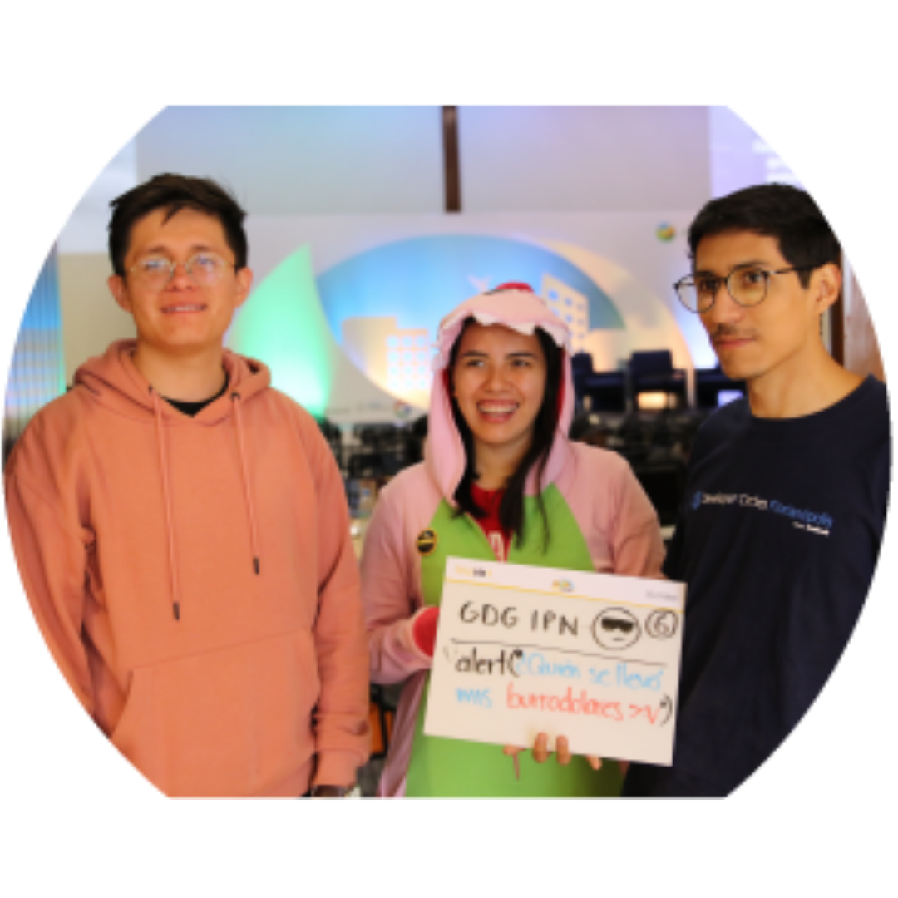
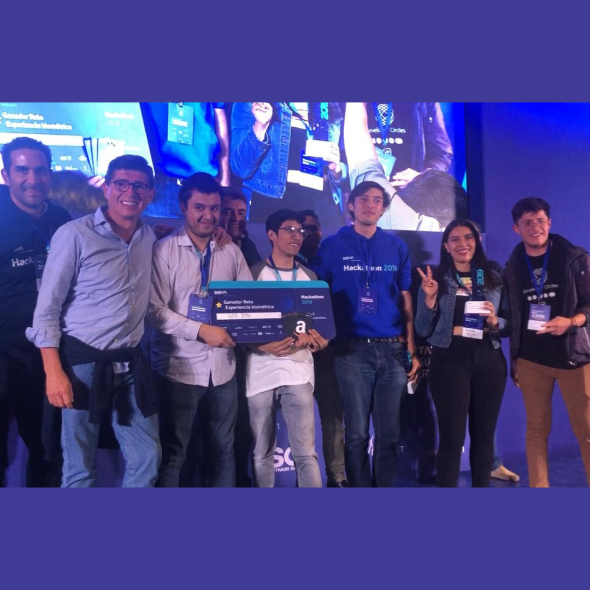
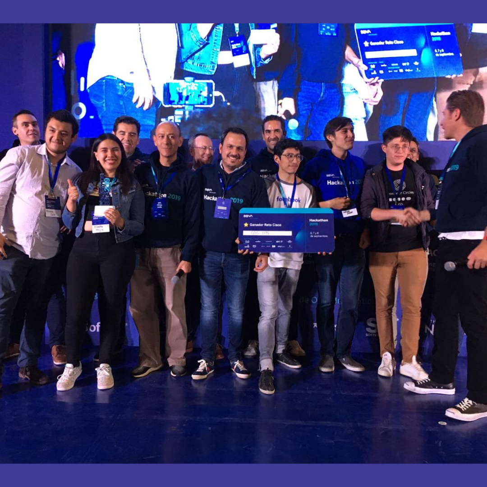
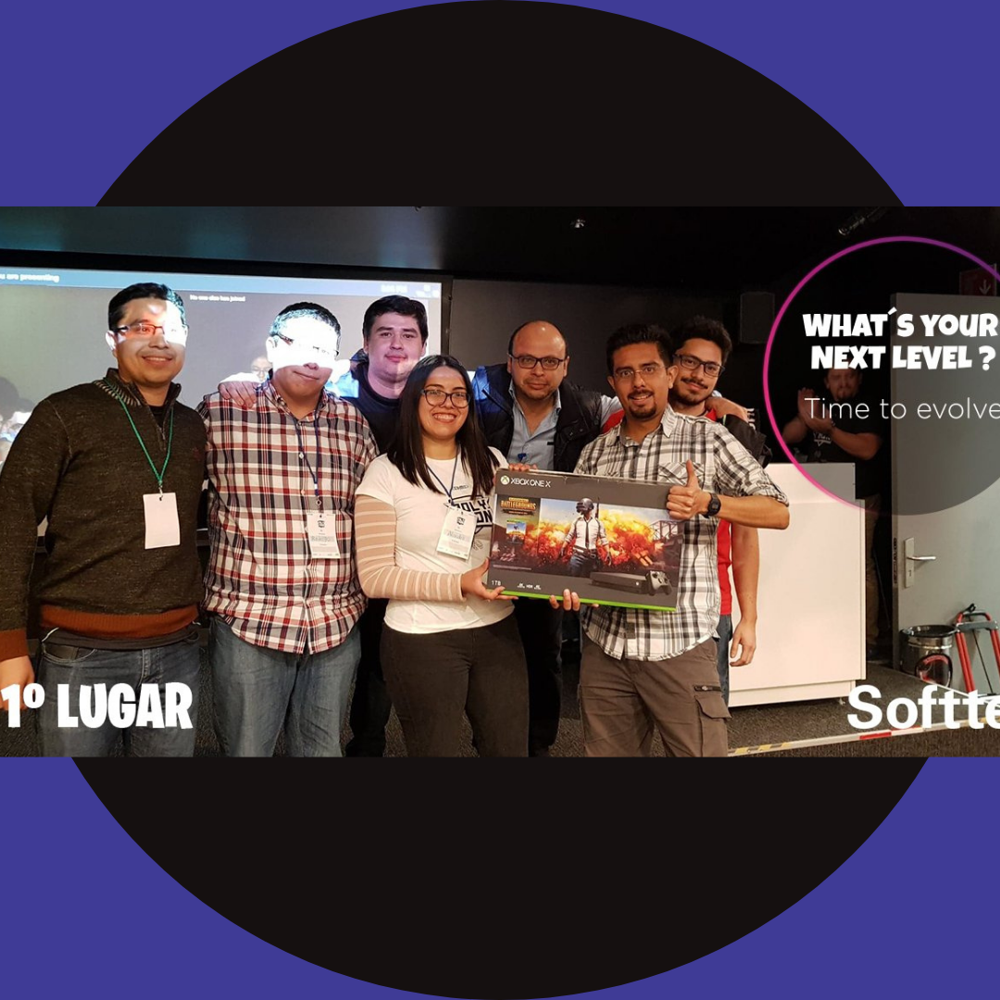
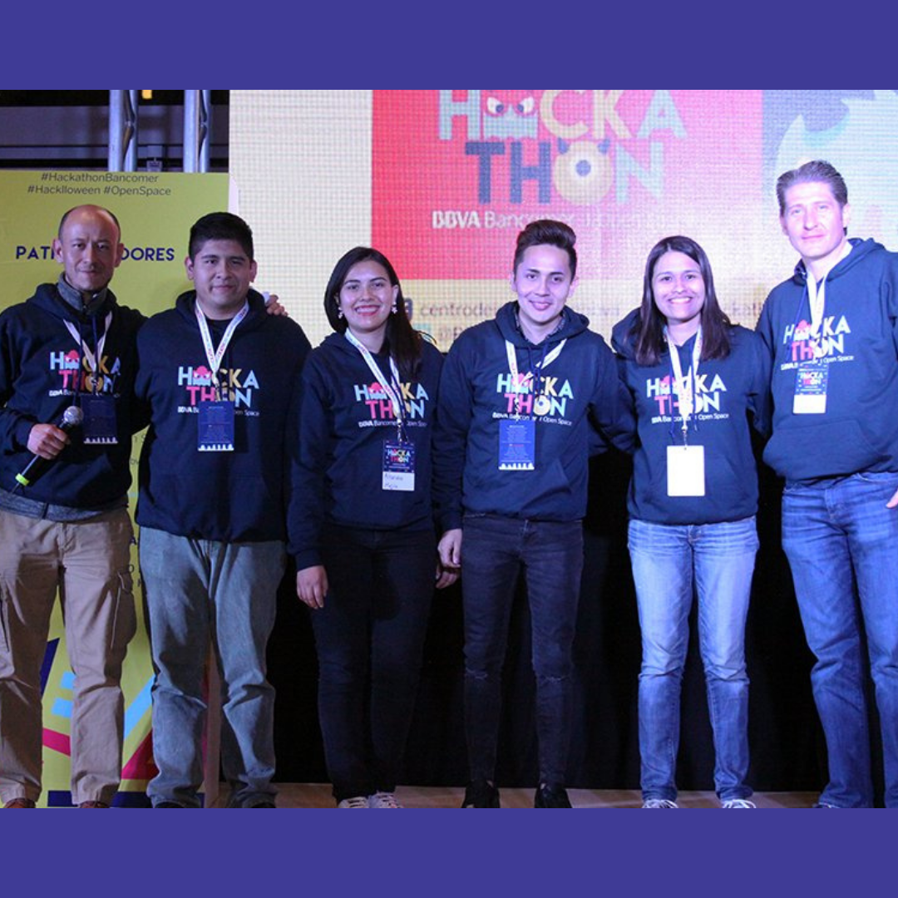

Hello world!
Welcome to Technoland
About me
¡Hola yo soy Alondra! y te doy la bienvenida a technologirl ;)
Estudiante de Ingeniería| Cloud Engineering Analyst | GDG IPN co-organizer | WTM Ambassador
Soy una apasionada de la tecnología y me gusta poder compartirlo en distintas formas una de ellas es justamente Technologirl, un proyecto al que le tengo mucho cariño. Me fascina dibujar, es muy relajante. Amo a mis perritus
Communities
GDG IPN
Comunidad de desarrolladores, buscamos compartir conocimiento y aprender en conjunto de forma continua, dar herramientas para que los miembros de la comunidad se sientan bienvenidos y crezcan con nosotros.
GDG IPN eventsWomen Techmakers
Programa que busca visibilizar a las mujeres que ya estan en el mundo tech, brindandoles recursos para continuar aprendiendo y una communidad en la cual recibir apoyo.
WTM CDMXHacks&Projects
2° lugar | Hackahon Innovacción Televía
Modelo predictivo de saldos para resolver problema transaccional de televía. Integrado en un chatbot de Messenger.
Web Innovacción TelevíaReto Experiencia Biométrica | Hack BBVA 2019
Chatbot con prueba de vida para la autenticación y el uso de distintas funciones bancarias desde el mismo. Integrado en messenger.
Tweet BBVAReto Experiencia Biométrica | Hack BBVA 2019
Mejor uso de tecnología Cisco, usando Mindmeld para el desarrollo del chatbot del Reto Experiencia Biométrica.
Tweet BBVAReto Softek | Polython 2019
BitBot. Plataforma con un dashboard y chatbot integrado para el monitoreo del precio del Bitcoin, integrando alertas personalizadas para precios, ayudando a la compra y venta oportuna de criptomonedas.
Tweet SoftekReto Cisco | Hackathon BBVA 2017
Análisis inteligente de logs, presentado en un dashboard y conectado a un chatbot para recibir alertas al equipo específico que debe resolver la situación detectada.
Tweet BBVAFollow me on...